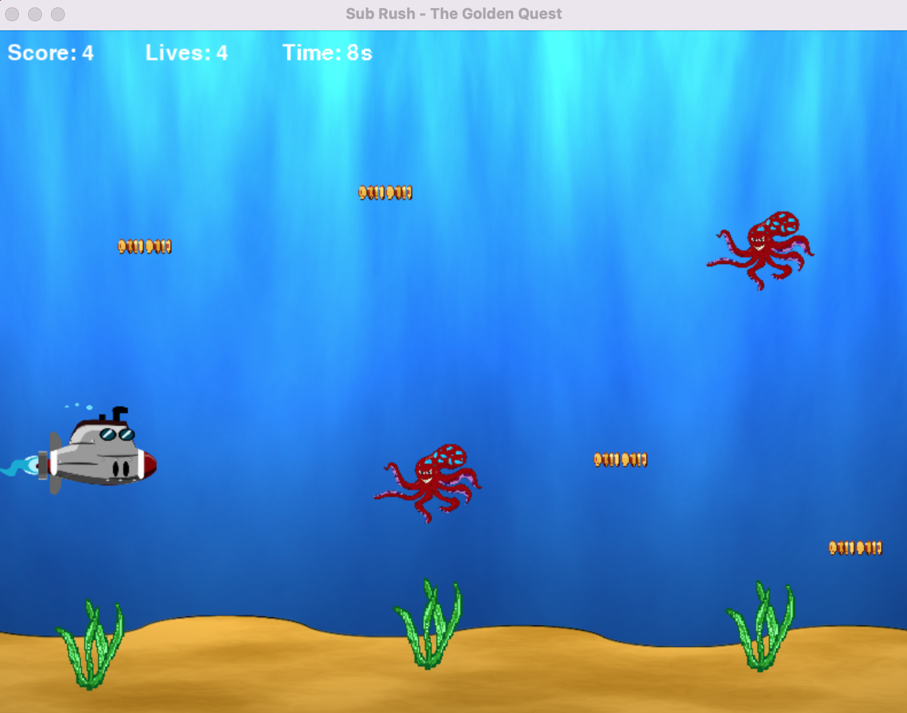
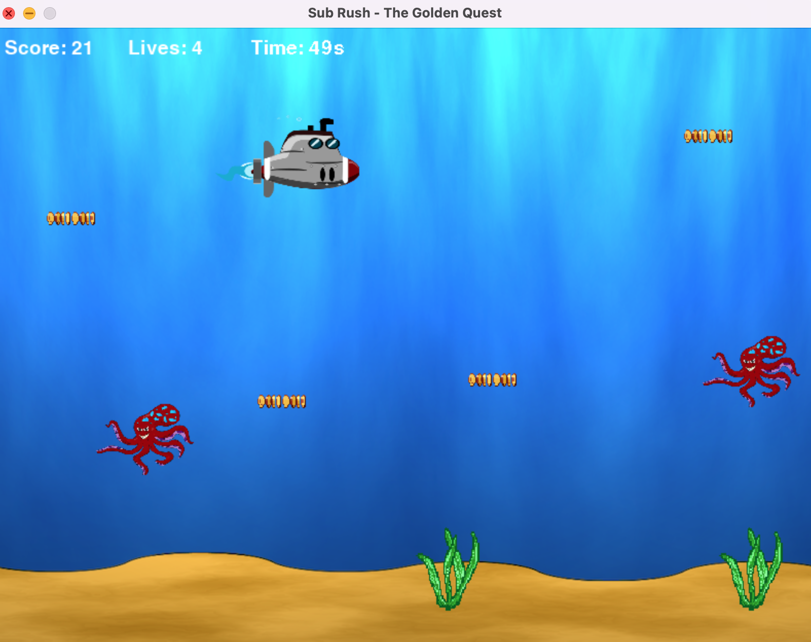
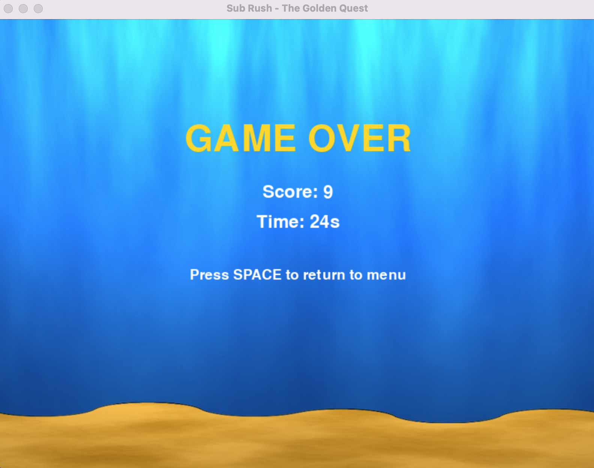

Sub Rush – The Golden Quest
This is a 2D game I created in Python using Pygame. The player controls a submarine, collects coins, and avoids obstacles like seaweed and octopuses.
The goal is to reach 100 points as fast as possible, while managing lives and avoiding collisions. As the score increases, the game becomes more difficult by increasing obstacle speed and spawn rate.
My approach
Since Pygame was new to me, I used a tutorial as support to understand how graphics, movement, and the game loop work. From there, I built and adapted the game while continuing to experiment with features.
I implemented new functionality and improved the code structure using external resources as support, while making sure I understood how everything worked.
Key features
- player movement using keyboard input
- collision detection with enemies
- score and lives system
- increasing difficulty after 50 points
- multiple game states (menu, game, win, game over)
- sound effects and feedback
- basic spawn logic with collision handling




What I learned
This project helped me understand how game loops, event handling, and object interactions work in practice.
It also taught me how to break down a larger idea into smaller parts and build it step by step.
The overall structure and design decisions reflect my own approach, supported by external resources during development.